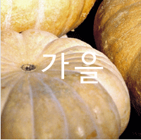

<!DOCTYPE html>
<html lang="ko">
<head>
    <meta charset="UTF-8">
    <meta http-equiv="X-UA-Compatible" content="IE=edge">
    <meta name="viewport" content="width=device-width, initial-scale=1.0">
    <title>switch-case</title>
</head>
<script>    
    //
    // var num1 = Number(prompt("1~4 까지 좋아하는 숫자를 입력하세요",""));
    // var result1;
    // switch(num1){
    //     case 1 
    //     :result1 ="1입력"; break;
    //     case 2
    //     :result1 ="2입력"; break;
    //     case 3
    //     :result1 ="3입력"; break;
    //     case 4 
    //     :result1 = "4입력"; break;
    //     default:
    //         alert("1~4까지만 입력하세요");
    //         result1 = "다시입력";break;
    // }
    // document.write(result1);
  
  //홀수,짝수,숫자가 아닙니다.
//   var num2 = Number(prompt("숫자를 입력하세요 1~100"));
//   switch(num2 % 2){
//     case 0:
//     document.write("짝수입니다.");break;
    
//     case 1:
//     document.write("홀수입니다.");break;
//     default:
//         document.write("숫자가 아닙니다. 다시입력"); break;
//   }

/* 좋아하는 계절의 번호를 입력하세요 
1.봄 2.여름 . 3.가을 4.겨울

출력 1 : roll1_1.gif 2: roll2_1.gif 3: roll3_1.gif 4 : roll4_1.gif  */
var num3 = prompt("좋아하는 계절의 번호를 입력하세요\n1.봄 2.여름 3.가을 4.겨울");
 switch(num3){
    case "1" :
        document.write("을 좋아합니다"); break;
    case "2" :
        document.write("을 좋아합니다"); break;
    case "3" :
        document.write("을 좋아합니다"); break;
    case "4" : 
        document.write("을 좋아합니다"); break;
    default :
        document.write("숫자가 아닙니다. 다시입력"); break;
 } 
</script>
<body>
</body>
</html>